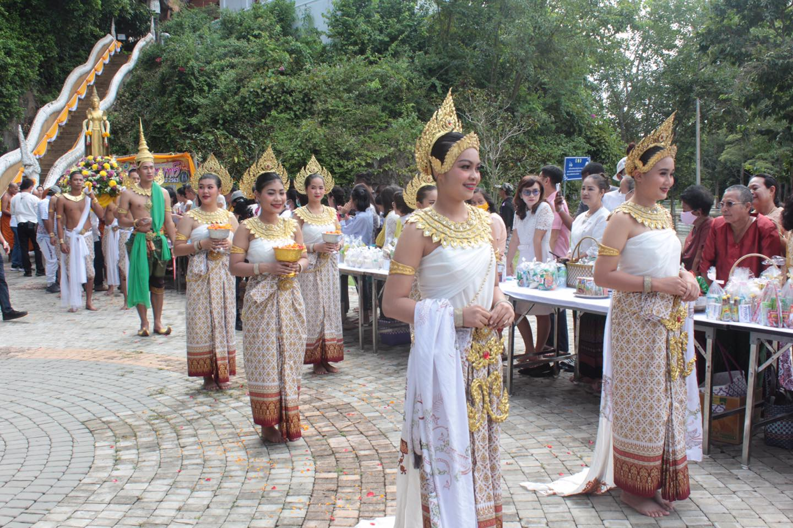

ประเพณีชักพระ

ประเพณีชักพระหรือลากพระ ที่วัดคูหาภิมุข หรือวัดหน้าถ้ำ ม.1 ต.หน้าถ้ำ อ.เมือง จ.ยะลา ชาวบ้านชุมชนหน้าถ้ำได้ร่วมกันสืบสานประเพณีวัฒนธรรมท้องถิ่นของภาคใต้ ในการร่วมอนุรักษ์ประเพณีการสมโภชเรือพระในวันออกพรรษา โดยได้มีการจัดขึ้นภายในบริเวณวัดหน้าถ้ำ หรือวัดคูหาภิมุข ซึ่งมีมหรสพ การแสดงบนเวที การแสดงหนังตะลุง และการรวมกลุ่มของแม่บ้านเพื่อทำอาหารหลากหลายชนิดแจกจ่าย และเลี้ยงฟรีแก่ผู้เข้าเที่ยวชมงาน
นายชัชพงศ์ เพชรกล้า นายกองค์การบริหารส่วนตำบลหน้าถ้ำ ได้เปิดเผยกับผู้สื่อข่าวว่า การจัดกิจกรรม และมหรสพขึ้นในครั้งนี้ ถือเป็นครั้งแรกที่การท่องเที่ยว จ.ยะลา เข้ามาร่วมกับองค์การบริหารส่วนตำบลหน้าถ้ำ วัดหน้าถ้ำ และชุมชนท่องเที่ยว ต.หน้าถ้ำ ได้ร่วมมือกันในการจัดกิจกรรมขึ้นมา เพื่อให้พี่น้องประชาชนในพื้นที่ได้ร่วมกันสืบสานอนุรักษ์วัฒนธรรมประเพณีของพื้นที่ให้คงอยู่ โดยการจัดกิจกรรมก็มีการแสดงบนเวที การละเล่นหนังตะลุง การทำบุญสมโภชเรือพระ และการรวมกลุ่มของกลุ่มแม่บ้านในชุมชนในการประกอบอาหาร ไม่ว่าจะเป็นขนมจีน ขนมครก ขนมโค ขนมจาก เพื่อเลี้ยงผู้ที่เดินทางมาเที่ยวชมกิจกรรม หรือมาร่วมงาน นอกจากนี้ ยังพบว่ามีชาวพม่าเชื้อสายมอญที่มาทำงานก่อสร้างในพื้นที่จังหวัดยะลาหลายสิบคนเดินทางมาเที่ยว และร่วมกิจกรรมภายในงานนี้ด้วย
ผู้สื่อข่าวรายงานว่า ทั้งนี้ ในปัจจุบันสถานการณ์ในพื้นที่จังหวัดชายแดนภาคใต้ ได้ส่งผลกระทบต่อวิถีการดำเนินชีวิต รวมถึงวัฒนธรรมประเพณีประจำถิ่น ทำให้บางพื้นที่ไม่กล้าที่จะจัดประเพณี เนื่องจากหวั่นเกรงความไม่ปลอดภัย แต่ในบางพื้นที่ บางชุมชนยังคงมีความเข้มแข็งของกลุ่มคนในชุมชนที่ร่วมมือร่วมใจกัน และต้องการสืบสานวัฒนธรรมประเพณีของท้องถิ่นให้คงอยู่สืบไป
โดยในวันรุ่งขึ้น จะเป็นประเพณีการชักพระ หรือประเพณีลากพระ ถือเป็นประเพณีของคนใต้ ที่วัดหน้าถ้ำก็จะมีการจัดกิจกรรมให้มีการตักบาตรเทโวพระสงฆ์จำนวน 30 รูป เดินลงมาจากถ้ำที่มีพระพุทธไสยยาสน์ หรือพระนอนศรีวิชัยที่ประดิษฐานอยู่ภายในถ้ำลงบันไดมาให้ประชาชนได้ร่วมกันตักบาตรเทโว ซึ่งเชื่อว่าจะมีประชาชนจำนวนมากเดินทางมาร่วมทำบุญตักบาตรกันอย่างกันอย่างพร้อมเพรียง
ย้อนกลับ